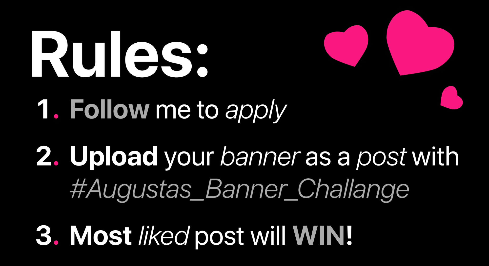

Hi, My name is Augustas and I made this course for everyone who is seeking to level up their appearance on social media.
It’s worth your time more than you think.
I will make you look so good that people feel stupid not knowing you!
Hi, my name is Augustas and I’ve made this course for everyone who is seeking to level up their appearance on social media.
No, I’m not some random kid, I am a full-stack website developer, graphic designer and a photographer. This “give away course” is not like other, this one is actually good and will soon see why. I’ve been constantly learning to be the best at those things and now I’m sharing all of my knowledge with you.
Okay, now shortly what you’re going to learn in this course:
• We’re going to uncover the secrets of human psychology in order to figure out the logic behind being “professional”
I’ve put a lot of hours and late nights into this course in order to make it the best of the best and the best part? I’m giving it away for free for the next 48hrs xD. And after that you’ll have to pay me!!!
• Then we will go to a step by step guide. I will teach you everything from ground 0 to professional level in no time. The only thing that you’ll need to do is to work.
What exactly we will make?
• We’ll start from making a stunning profile picture and becoming photographers ourselves.
• Then we’ll use the same skills we’ve learned to make a banner.
• After that we’re going to discover ourselves in just one sentence. Making a bio which is interesting to read and attracts people.
Last but not least is we’re going to learn graphic design! Trust me, this skill will help you absolutely everywhere in life, I’ll teach you how.
And lastly, we will talk about websites and their true worth and impact on your brand.
So stick around with me and lets make our brand pop!
In this guide we will cover all the aspects of what makes up a brand and how to make it look professional.
In depth - from what it is, to complete step by step guide on how to do it.
After this course you’ll have rebranded your profile completely, made your appearance on social media POP.
This guide is FREE, because you have to “do it yourself”, you have to put in long hours of learning, putting in the work to get results.
But if you would like it to be “done with/for you”, without you working hard, connect with me here.
To make it clear, I can only help 3 people at the same time, so don’t miss your seat.
I’ll be glad to help!
In order to look “professional” we got to cover what makes a brand look better than others.
That’s where human psychology comes in, to help me explain how and why everything works this way.
If you’ll understand it - you’ll conquer this course, so listen up!
Psychology… no one likes it, but it is the bare bones of the structure that makes you successful.
In this part of the course we will uncover how each and every tiny detail in our brand impacts our followers.
We will make solutions on how to make them like and be attracted to your content.
After this section of the course you’ll be ready to make those adjustments yourself, so let’s get started!
Your profile is your face on social media.
People will only remember you from the profile picture they see, that’s why it is the most important detail out of them all.
If your pfp is looking good - a high quality, legitimate photo of yourself - people will instantly think of you that way, they’ll be attracted by it.
However most of you have a shitty, trash quality photo of themselves or even just a random stupid picture, which instead of attracting people, makes them loose interest in you instantly.
If you hide yourself from others, how to get a trustworthy following then?

Almost all of the profile pictures are trash, because nobody knows how to take a good picture of themselves (we’ll cover how to do it in action section, step by step) and so to stand out is really not that complicated.
Many people implement design over or behind their face, to make it look different, but that’s not the case though.
Profile picture often gives emotion. Yes, even that little circle of your face can shine with all of it’s glory and be recognised in an instant if it stands out - if it is professional/different.
And the thing about being authentic is that each of us are special in our own way, the thing we need to do to stand out - is to show who we really are to others.
Your profile picture is your FACE on social media. Make it look so good that people could recognise it in a millisecond!
But what about the header? or how you call it “banner”?
Well, it’s just as important as your pfp.
It’s the background of your profile picture.
It’s the back story everything that you’re doing.
Yes, It matters a lot too, and you can either make it increase your overall appearance or ruin it.
People don’t care as much about it, as your pfp and bio, but it should match the emotion that you’re trying to share.
Header is like a big advertisement of your body and personality.
People should be attracted by it just like to ads, on social media, who are trying to catch your attention.

Mostly headers represent important visual information too.
You can see a lot of people put a little arrow next to the follow button, to guide you to press it, and sometimes it works.
Imagine a header like a background behind you, imagine it as the landing page (that’s why I call it header).
When people see a well designed banner, they instantly sense the professionalism behind your brand.
Make it be worth it.
Header/Banner is a background of your profile. It either makes it look more appealing or break everything apart. It’s the last piece in the appearance puzzle. It should be the landing page of your profile.
Another aspect of your profile is your bio.
Bio literally means biography, and no, not that old boring book about some random guy with all of his actions and memories, it’s about you.
When people catch an eye on your profile picture the next thing they will do is check your bio.
And if they see a lot of random text, sentences, emojis, symbols, overall just a mess without any structure, they will IN AN INSTANT close your profile and never ever come back.
That’s how most of you probably share your story with others.
No wonder why you look so boring, even though you are an amazing person in real life.

You have to be able to share what you are in a short paragraph, you have to seem professional and authentic so that your future clients would have fun reading about you, and for sure, would like to know you more.
While reading it, your brain unconsciously starts to make an imagination of you in real life, they predetermine how you live, act, work, just from reading a couple of lines.
By reading a short paragraph we should be able to imagine an exact copy of oneself.
When people meet you the first time - they check your bio.
After reading just 2-3 sentences about you, they should know everything.
Bio - biography of yourself. Make it enjoyable to read. It forms an imagination of you in your client’s mind. This can either make them like you, or never want to see you again.
It might get boring at this point to learn about psychology, you can ask yourself “Why the hell do I have to learn about stupid psychology, why does it matter?”, well it’s the bare bones, the logic behind if you’re going to succeed or not.
I’m telling you this not only to give an understanding on how your mind works, but also to be able to manipulate others with your own skills, which we will cover latter.
We have got a pfp, bio, header, what else could there possibly be more to uncover?
Well, if you want to make people like you more than anyone they know, you’ve got to invest in your posts, graphic design and finally a website.
So let’s continue:
Yes, your writing style matters too.
It can either lead people into reading everything you got to offer, or just make them skim through it and move on without understanding what you’ve meant.
The way you write the text - is your voice.
When there is a lot of shit mixed together into one big “cow’s pancake” (even bigger shit), no one wants to even read it.
Ofcourse, your true followers don’t even care about the structure of how you write, they care about what you’re trying to share, but that’s the minority of people.
We all want to read a well spaced, pointed out, clear text, so that it would be easy and beautiful to read.
Text is the way to share your emotions.
While reading, a person should be taken into another dimension of your story, that you’re trying to tell, they should be super interested and attracted by it so that they’d do anything you tell them too.
Make your unique, authentic self shine throughout the words that you’ve written and everyone won’t have a problem talking back to you too.
Text - your voice. Be able to talk clearly so that it would be easy to listen and understand. Share your emotions with words, manipulate people into believing what you’re telling them to.
People probably found you by seeing one of your posts.
Was that luck or you attracted them because of your content?
Well, people get attracted way easier if they see a stunning and high quality, custom made graphic design, made specific for that post.
It just gets into your consumers brains that you are the one - you’re that good one, and they want to get back and back to see your posts with amazing art to be entertained.
The thing with this is, that you don’t only make your followers get back to you, but also attract way more new eyes than you expected.

When you scroll, what you see is text.
You don’t expect to see a stunning design, and when you do, you definitely stop to read it, and give feedback.
That’s the magic of being different.
Well you got to be thinking now that you “don’t even know how to do graphic design”, don’t worry, I will teach you latter in this course!
Post with graphic design gets way more eyes than regular text, because no one knows how to make design. Be the one who knows how to do it at the end of this course.
The last thing I want to uncover is the psychology behind websites.
To have your own custom website defeats everything I’ve said earlier.
When people see that you’ve got a fucking website they get out of their minds.
Why do people do that?
It’s because no one knows how to make a websites themselves, they do know that they cost a lot to make though.
When they do see a person who knows how to do it or has done it, no matter the pfp, bio or header, the person instantly believes that you’re professional.
If you can do it, you’re “golden”.

Website is where you sell yourself, it’s your evidence of existence.
When people open it, they should be greeted with professionalism and clarity.
Yes, the web should be well built too, not like you see, almost everyone uses free softwares to make an “ok” page.
It works, but is not effective at all, that’s why to have a professional website is a must.
It’s an instant win of being better than all the competition.
Personal website defeats it all and makes you look professional, without even people seeing your pfp or bio. It’s your proof of existence. Sell yourself there, attract others, make them buy from you and think that you’re 10x better than them.
Finally this part is over!
Now, when you know why things are the way they are, we can move on to the hardest section: Action.
There you’ll be provided how to do EVERYTHING I’ve said, from 0 to professional level.
So fucking be ready to work!
This ain’t going to be easy, this will be hard, but worth every single second of your time.
Hey, so you’ve made it to here! Great!
Now we will learn and work.
And by that I mean we will learn from how to pick a camera in your hands and shoot a profile pictures to how to make a short biography of your wholesome life, make beautiful graphic designs, and hopefully create websites together!
Here I share all of my knowledge that I have till this day.
That I have build day by day since I was born.
And I loved every fucking second of it.
This part is going to be so detail, that I’m sure you’ll have no questions afterwards, just work left to do.
So grab your notebook, or phone, sit near computer and without further ado, let’s get to work.
I need you to go and grab a piece of paper and a pen, or open your notes file, it doesn’t matter what, just be ready to write down AF many things.
You’re going to become a professional here, learn skills which you can apply in the future of your life.
The best case scenario would be that you would sit near your PC, because you’ll need to download some softwares and get to work.
Without further ado, let’s go!
As we have uncovered in previous psychology section we know that your pfp is the most important thing in your brand, so we are going to make it POP.
Don’t know what you need in order to make it?
Got you covered, I’ll explain everything you’ll need to have in order to make it look professional.
You’re not a photographer?
No worries, I’ll teach you hot to become one in no time, be able to take that stunning profile picture.
You’re not a photo editor?
I’ll help you here too, by explaining each and every setting you’ll need to tweak in order to make your photo shine!
Let’s begin with:
You’ve got that piece of paper? Okay, write down what you need to get asap:
• Camera (phone works too (if it has a high quality camera), try to find a friend maybe who has a professional camera, or even rent one yourself)

• Tripod or a friend (
• Nice clothes (
• A visit to a barber (
Wrote that down?
Go and find, book, all of those things right now and proceed further only when you’re done, we will make this photoshoot together!
I’m an enthusiastic, professional photographer with over 3 years of experience (see my photos here).
Doing it all because it’s one of my many passions which I enjoy doing everyday.
Don’t worry if you don’t know anything about photography, I’ll make sure to give you a strong foundation of the things you need to do in order to become one!
Let’s start from learning:
It is super important to learn composition in order to take a competent photo, and I’ll tell you everything about it within 6 pin points.
Now go to your phone or camera settings and enable what’s called “grid”.
It will show 4 intersecting lines on your screen which will help us.
Then go outside and lets learn and at the same time practise!
1. Follow the Rule of Thirds
The “rule of thirds” is a composition technique that is super easy to learn and just as easy to apply to your images to help you create better photos.
When it comes to capturing photos, many people simply point the camera at their subject and press the shutter button.
Job done! By following the rule of thirds, however, you can create a stronger, more interesting photo which, undeniably, makes your photo look professional.
Now, when you have got your “grid” enabled, simply compose your shot so your main focal points (things you want to shoot) are positioned on, or close to, one of the four intersecting lines.
If that’s not possible, then position your subject along one of the lines or in the middle of the window.

Any photo that you take, in which the main subject is placed just there, where the lines cross, will make your photo look professional.
Here are a few examples of MY photos that follow the rule of thirds used in photography:


1.1 Breaking the Rule of Thirds
There are times, of course, when rules are meant to be broken – for example, when you want to fill your frame with your subject, which is often the case with portraits, pets, or when you want to photograph a landscape or subject with a lot of symmetry.


2. Include Texture
Add interest and detail to your portrait photography by including texture in your images.
Position your subject against a background which has a contrasting texture.
For example, rough tree, wall, any object which can form a beautiful view just behind you (don’t worry about it too much, because we’re going to use something called “bokeh” to make it blurred)

3. Create a Shallow Depth of Field
You probably have seen that “professional” looking background blur, it’s called “bokeh” and unfortunately it’s achieved only on a camera, because it has a setting called aperture, which determines how much light goes into the camera.
The more light, the bigger “bokeh” blur behind you.

This is the thing that mobile phones cannot naturally do, only with a help with AI you can make it on your smartphone, but it doesn’t seem real.
By seeing the blur behind you, everyone will instantly associate the taken photo with professionalism, because bokeh makes the image POP!

4. Provide Direction
When positioning your subject A.K.A. - yourself, consider the direction of your body and eyes.
Compose your photo so you have space to look at to, not directly to the camera - don’t be a creep.
You might say to me now that you don’t know how to pose?
I’ll tell you a secret - the way that you’re reading this right now is your natural form (fix your back to be straight).
Try to be yourself and don’t overthink it.
Just stand, legs shoulder width and improvise, be yourself!

5. Use Leading Lines
This minor detail can truly enhance your photo.
By finding lines which lead the way of the frame, like a road or pillars like in example, and when you frame your camera, look that the place where it ends in the horizon is in the middle of the frame (or try to put yourself just at the point where it ends/leads).
The point is, that this makes the whole world around you, lead towards you and so makes your photo look well placed.

6. Break the rules
Considering all of what I’ve said to you, break all the rules you can.
It’s you, who is controlling everything, so be creative and find your way into positioning the camera - the way that think is the best for you.
Shoot for the moon.

You surely did not expected to see a whole tutorial on how to be a photographer, did you?
Well, I’m just starting, lets continue with the:
Now, since you’re a professional photographer, better than anyone you know (except me xD) we can continue on finding a place to make this photo.
It can be a special place, it can be everywhere you’d like it to be, what matters is that you got light shining at your beautiful face.
No, home is not a place for that, go outside, touch some grass.
Me personally, I love the mornings and evenings, when the sun becomes orange, when the “golden hour” happens, it’s truly something special.
The place could mean something to you, or it can be totally random.
The point is to make this photo special for you, then it will be special to others.

Now, put this course down and just go outside, take a walk with your camera, shoot some photos and learn, apply all the rules I’ve told you, experiment.
When you’re done learning how to capture photos, it’s time to capture yourself.
Let’s do it together and edit the photo too!
You are a professional photographer now, you can take a photo of yourself.
Right?
Then, get groomed, dress nicely, invite a friend over or a tripod to take a picture for you.
Come to the place you’ve choose and just take a fucking picture.
Don’t go like “I’m not pretty today, I look stupid!”, yes, you will look horrible if you constantly think like that.
Just make all of that noise gone.
Quiet.
Then stand in the middle of your camera, in the middle of the leading lines, in the middle of the background and take a picture.
Take many pictures, try to place your camera there, or over there, and just have fun! (set the shutter timer on your camera, or if you’re alone (which you shouldn’t be), text me, I’ll come to help).
Most importantly don’t overcomplicate this thing.
Enjoy the time you’re spending on doing something new and fun!

After this photoshoot, save the best photos and sit near your computer, we’re going to edit them right away:
SUPER great!
You now got a professional photo of yourself completely for FREE, and just because you’ve made it, you love it!
But that’s not all yet.
We need to edit the photo in an editing software.
Don’t worry, because you’ll need to tweak just a little bit of settings in a program called: “Gimp”.
It’s free to download on your PC, and will help us to enhance the picture.
It’s a must to do, so follow along!
The download link is here.

Okay, now open gimp, and drag the best photos you’ve chosen after the photoshoot.

Then, go to the left top corner and press on “colors”. In that section, press on “layers”.

Now you’ve opened a window with a black and white color balance of your photo, don’t be scared!
See that black arrow on the left?
Drag it towards the big mountain’s start (to the right. If it’s already inside the mountain drag it less to the right side) and look how your picture’s black color appear, how it get’s that contrast and deep black colors.
Be aware to not drag it too much so your photo doesn’t look too dark.
Use your own opinion on how dark and contrasty the picture is by adjusting the settings.
You - is what to listen to.


Then grab that white arrow on the right and drag it to the left, to the start of the big mountain.
Do the same adjustment, and look how you image becomes brighter, how it shines with it’s glory.
Be aware again of not making it too bright too.
But again, make it as bright as you want, “break the rules”.


The difference is significant!
Experiment with these settings.
There are no rules how the image has to look “right”, you choose what looks the best for you.
If you’re happy with the result you’ve got, move on, and if you’re not, if you want to edit it more, remove the background or change the colors, here are the best tutorials on how to learn to do that:
Edit Like Me
101 Crash Course
Remove the Background
Full Editing Course
After you’re done hit the button at the top left corner called “File”, then find “Export as” and press it (makes a copy of the new photo).
Or if you want to not make to change the original file, press on “Overwrite”(changes the original photo).
After you chose your method of saving it, press “export” (don’t tweak any of the settings on the export window, leave it as it is).

And voila! You’ve successfully edited the picture to your liking!
There are mainly 2 types of pfps.
One of them is no background, just one color or texture, maybe even everything in grayscale.
That’s what all of the mediokers are doing to stand out, well it does not work as good as a true photo.
It’s too dull and boring to look at, it doesn’t STAND OUT.
That’s the reason why I don’t recommend you to do that, but if you feel that it’s wrong, go ahead and do what looks the best to you!
If you’re interestd in:
• Rebrand
• Better endgagement
• More warm comments
Press here, to make it happen in less than 7 days.
Just like I’ve helped these guys:
You can become one of them here!
I’ll be clear, I can only help 3 people at the time, so don’t miss your seat.
Here you go!
Now you have got a professional looking profile picture which you can share with the whole world and do not look like a creep.
Maybe before opening this website and reading the course you were nothing, but now I’ve made you a photographer and photo editor!
You’ll be able to use all of these skills in the future of your life!
Believe me, I’ve saved you so much time so you don’t have to research them yourself.
Thankyou for following me along.
Let’s move on!
It’s a story, about who you are and your future goals, about what you are and for who it is.
This short paragraph is the second thing, that people look at after getting hooked by your pfp, that’s why it has to be professional too.
You have the freedom to write the bio however you want, but probably, you can’t write it so it fits into that stupid word limit.
Let me help you to make it fit perfectly!
As well as with photography, you need theory to write a good bio too, you need writing skills to make it look and sound appealing.
So let’s start with these 4 points:
1. Don’t Be Overly Formal
It’s a common mistake for people, like you, to be overly formal in their bio.
By trying to fit a big message or summary into that tiny space, your brand can become overly edited and appear very uptight rather than fun and approachable.
Make sure your bio is easy to read, is appealing to your audience, and has potential to attract new followers.
2. Allow Your Brand Voice to Shine
You have likely spent quite a bit of time creating a unique appearance and voice that speaks to your brand’s mission and the tone that you want to use while communicating with audience.
Your bio is a great place to allow that voice to i as you try to attract new visitors and inform your current followers.
Try to make the bio your “voice”.
3. Share the Most Important Information
While you want to keep your bio light and concise, you also need to communicate key information.
Take some time to go through the different messages you want to share.
Write them down, or even create a whole big text about yourself.
Pick what is the most important for your brand to share, cut it out and try to make one sentence.
Hopefully to seduce potential new followers into checking you out more!
4. Have Fun with Your Bio
Bio is a short paragraph about your whole life.
Have fun researching your old memories, values and putting them into one place.
If your bio seems to lack your abilities, then go get some or share your future goals as a part of the story.
The thing about your bio is the same as with photography rules:
"You have to break them in order to get what you want"
So don’t be afraid to do so.
Now, open that notes file and let’s write a professional bio together!
Now I need you to take your whole life and put it in a sentence.
I believe it’s impossible to put everything, so don’t.
Choose only 2-3 fundamental things to put about you.
Those things should be the ones you’re pursuing or using in order to run your brand.
For example, I can play piano, I’m a videographer, I can cook, I love Paris, and all of those things does not matter!
What matters is 1 or 2 things that I’d like to share with this world (like me for example, in my bio I share only these skills that I’m trying to teach you), to attract similar people, to pursue only on that 1 thing.
Why?
Because you can only be “good” at everything, but you can be “professional” only in one aspect of your life.
Choose what it is.
Pursue it.

The next thing you need to know is your future goals.
What is the thing you’re trying to achieve by doing the things you do?
For example: “retire my parents, become financially independent, have 1k followers at the end of this month”, people like to see that you’ve got a vision up ahead of your life, that you’re constantly on it, and believe in yourself that you can achieve it.
Define 1-2 main goals to share and that’s enough.
Like I say: “Less is more”.
The more specific you become with yourself the better the outcome you achieve.
My dream is to drive a motorcycle, but it’s not relevant to others at all, so I don’t share it.
Another thing you can add is your “mission”.
What you’re doing here, what are you helping?
Ex: “Helping you grow your biz, helping you get fit etc”.
People will know that you use those skills not only to benefit yourself, but to help the people around you, and by defining what you help you need to know for who you help.
What type of person you’re doing all of this for?
For pregnant woman? For young entrepreneurs?
You have to be specific, and just don’t be like: “helping everyone…”, you mean you even help my dog to do that? Wow.
Just define 1 or 2 groups of people which you want to connect with.
Remember “more is less”, that quote works the other way around too.

So now, think.
What are you in just one sentence?
What I could read about you and in an instant understand what you’re all about.
Like me for example "I’m a young, hard working teenager, who is pursuing his dreams every day".
That’s what it should be.
Go, write, journal all of your life on the sheet of paper.
Imagine that you’re writing this for another person to fully understand EVERYTHING about you.
Then after you do it, underline the key points, your hobbies, passions.
After that put all of those main points into one place and start connecting one with each other.
After these first 1-2 sentences are done, share your goals, your missions, your dreams that you’re working towards.
Take me - I’m helping people to improve their appearance on social media, also I have a goal of reaching $10k/month. (not enough space to fit that info xD, have not done it yet...)
Now, put all of those things that you’ve discovered about yourself in one short biography.
Most importantly - DON’T USE EMOJIS, you’ll look fucking stupid and childish, no one will take you seriously.
That’s why you’ve got to use “white space” (the space between text) or symbols to divide the ideas like dividers “ | ”, dots “ ⚬ ” and so on…
Just don’t make it overkilled with random symbols everywhere.
LESS IS MORE!
You can do this!
Now, your face on the social media is officially complete!
Good job if you followed around and actually learned something from this.
This will surely make your profile look well though of and almost professional.
Why almost?
Well, because we’re not done yet.
In order to become truly professional you have to implement these 3 more things left: graphic design, header and a website.
Those are the main components that makes you stand out from your competition - this means being professional.
Yes, I know you don’t have any idea on how to make graphic design or code a website.
I do.
I’ll teach you.
And if you listen to me, hopefully at the end of this course you’ll blow up.
And that’s all. Nothing more.
Be simplistic, I know you can do it no problem!
And if you want my help on rebrand, you can check out this.
Dig deep into yourself, and show me who you truly are.
With this being said, lets move on to becoming an artists!
This is a high value skill, and I’m going to share to you how to get started on learning and implementing it!
Yet still, no one knows how and where to do it.
When somebody sees some sort of visuals they will check it out first, and forget about others.
That’s why you have to have graphic design all over your posts.
You might not be an artist, and that’s okay, you’re authentic within yourself and even if what you draw looks stupid, to others it’s you, it’s beautiful.
You probably seen many designs, but never knew where the fuck they’re able to make them.
What software, where, HOW?
There are many softwares, but the best in my opinion is “Figma”, like sigma.
Let’s learn how to become sigma ourselves and learn Figma!
Sit near your computer again, overall it’s your workplace where you make money, where you improve these days.
So Figma is a cloud based software, which basically means that you can open this tool in a browser near any computer.
But at your main work station, download the app.
The link is here.
After you install it, download font installer too (to be able to use custom fonts).
Create a new account and let’s get started, because this is going to be a software, which you will use to make your designs POP.

This is a fairly easy software to use, there are many great tutorials out there, and I share the best one - the one I’ve started my journey with right here.
Go watch the video to get used to the program, and meet me here again!
NOW LISTEN!
Learn how to use Figma FREELY, so you won’t need any tutorials.
After watching the video I’ve provided here, shut everything, and make random stupid designs in order to get the controls, and be able to create absolutely anything.
If you know what you want to make, but don’t know how, of course go check out new tutorials, but after watching it, create like 10 more projects in which you use what you’ve learned on your own.
Just build this skill as much as you can, because you’ll be able to use it not only to grow your brand by making visuals, but in every aspect of your life
It’s a high value skill.
Give this Figma, sigma program your time and attention, it’s worth it!
If you want to be professional at this software, which the point of this course is, you obviously have to learn even more stuff, and so here are some more tutorials, that will improve your skills:
I’ve been learning sigma for over 3 years now, and as you can see the visuals and this website are stunning.
I have learned it as best as I can in order to be better than my competition.
Use it to your benefit and thank me latter.
We’re almost done!
Since you’re now are a professional photographer, writer and graphic designer, the two more things you need is a banner and website.
Let’s explore it together after learning how to work with Figma ourselves.
Yes, it will be a project for you to create, let’s learn more about it!
If you suck or have no time to do design yourself, I can offer you myself.
I can make custom graphic designs for your profile, in any style you desire.
If you’re interested in having professional graphics near post button, click here.
Thankyou.
Let’s continue to the exercise then!
If you have not read the full pfp guide in the first place - go and do it - because you’ll need the same knowledge here, as there.
So the banner is a backstory of your profile picture.
The best thing it could be, is a picture, taken in the same place as the profile picture.
Walk around and take as many pictures as you like of the background of your portrait pic.
Implement and break all the photography rules.
Then edit in Gimp the same way as you did, and voila!
There is another way to make a banner, and it can be graphic design.
Mostly with a quote inside, maybe some texture and effects, visuals, but not overkill, because it has to match the feeling and emotion that your face represents.
Don’t overthink the banner, let it be the thing you want it to be.
Put one picture, then after some time you’ll not like it anymore.
Change it, and look how the other one looks.
This process of trying different pfps and banners is totally normal, I have done it, and you should too in order to find that “professional” look that we’re all craving for.
Like in life, time goes, time changes, so are you changing too, don’t be afraid to express the change to the world.
If you leave the same profile for years everyone will think that you just put it there and forgot about it.
Yes, you have after doing it, just forget about it and let it run on it’s own.
Of course don’t change it everyday, because people will not be able to remember your face that easily.
But don’t forget to renew everything time to time.
Rebrand when your life changes.
Show to the world how you advance.
Believe me, everyone will notice it.
Like I’ve said, that your banner is an advertisement of yourself, the extended story of your personality and values.
Figure out what is your mission, as we will already done it in the bio section
And bring that idea to life with design or photography. (if you don’t know how to do create stunning graphic design, go the fuck up and do it!).
Make the header look just as attractive as your profile picture
Make them share the same design and feeling.
That’s why I’ve said to take the picture at the same place as the pfp, or connect these photos with same style and visuals.

Yes! You’ve heard me right, this is a challenge for you to compete within.
It’s your time to shine, to practise everything you’ve learned in my course.
You can do this, just open your imagination and start doing it.
If you only think about doing it, have a lot of questions - you’ll never do it.
But, if you start NOW, all of those unknown questions will be answered by yourself, so lift your ass up, and go to work.
Show me what you’ve learned!
And if you want a complete rebrand or any design related help to be done for you, you can see my offers here.
I can only help 3 people at the time, just to make you aware of it!
I’ll be more than happy to work with you!
The CHALLANGE post is here.
It will be super great, if you'd be a part of this.
Thankyou
We’re almost done becoming professionals ourselves, so stay with me, because now we’re going to uncover the hardest and most valuable aspect out of everything - websites.
Let’s explore!
This singe thing can make you from an average person on social media to a professional human being.
It’s so valuable, that learning how to do it yourself or hiring somebody to do it (me :D) is worth every penny.
Now a bit more about it:
It takes a hell of a lot of time to master.
To learn how to code, do everything yourself is the most complicated thing of them all.
It has bring me the recognition, because of how high value skill it is.
Why?
Because nobody knows how to do it.
Now you might say to me that there are many “no code” softwares which help you, by making a “no code” website.
Yes, but you’ll have to pay a lot of money to keep it running and have those “extra” features which you probably don’t know how works.
You also can say that AI can make a website for you, yes it can, but the website is trash and if you want to change it, you have no skills or understanding what to do (also everyone will notice the AI work and won’t even think about you being professional).
The website’s build quality is what matters too.
If you’ve got a poorly built and structured website, it will not look legit, won’t bring many eyes nor sales to you.
It’s the same thing as with “professionalism” psychology of your profile.
If it looks clean, amazing, well built and most importantly high quality, without a doubt you’ll become the best of the best.
If you have money, you probably have payed someone to make the website for you or you’re still wasting money on the “shopify” or “hostinger” subscriptions…(also wasting time learning those no code tools, because you know it “good enough” and it’s bad).
There is no solution to this problem.
Either you learn it by yourself (it will take you years, like it took for me to master it) or pay someone to do it for you
Just to show you, here’s the code behind this section.
This entire website took me 1 month with over than 5 000 lines of code to make.
Now, don’t be sad if you’re learning a no code software and making a very tiny websites on your own, it’s super great!
Continue on learning in order to create a website so good, that people can’t live without it.
That’s the level you need to achieve if you’re on this path of being a web-developer
Be aware, that website development is a huuuge topic, with so many stuff that can take years to master, so do your research, and decide if to pursue this thing further, or no.
Also websites often are the sign of “wealth”, because if you have your own fully custom website, you instantly become the best out of everyone who you know.
It’s a minor yet most efficient way to make your brand look and be professional, to bring you most success and recognition.
The problem that most of us lack - money.
And typically website developers asks for tens of thousands, because of the incredibly large impact that it can do to your brand.
Don’t be pissed off that you cannot make this happen, it’s one niche that will be missing.
It won’t stop you from achieving humongous success, because only you know what’s best for you.
You’ve got all of your life just in front on your eyes - so do something with it.
Believe in yourself and everything will work out.
With all my respect I can offer to make you a custom coded website.
I can do it in super high quality for cheap.
It’s an unique opportunity from my side.
I can make it from ground 0, with fully custom design (anything that you want, I can make it happen) and update availabilities at anytime too.
If you’re interested press here.
Thankyou.
And that’s all from the work side, but we’re not done yet, let’s figure out what to do next!
After you learn all of those skills which I’ve provided for you.
Maybe not all of them were suitable for you, and that’s totally okay.
Maybe you’ve hated some of them like I hate singing (it’s the thing I hate the most in my life), but I hope you’ve got interested in at least one of them.
Look at yourself, what have you learned?
What have you knew and implemented to make it even better?
Did you even like to take action and build your skillset?
I know you did, and you might be asking what to do next?
Well, I say follow your heart.
Follow your passion and deep purpose.
And if you want another answer - just continue doing the things you do everyday.
I didn’t know what to do with these skills until now - I share them with you.
I know that there are not a lot of individuals like you and me who are actually interested in living the life they want.
That’s why I believe in you that you’ll take my value from this course and hopefully apply it to the future.
Thankyou.
Continue your journey of learning and pursuing them.
Give effort into it every single day.
Grind until you succeed.
Most importantly be happy with what you do, because you have only one, short life.
Get the most of it by enjoying what you do.
Some of these skills can even make you financially independent (like web-dev or design), can grow your brand, and bank account!
The thing I’ve understood while being only 15 years old, is that everything is learnable.
I did learn all of these skills to be irrespective from other people, and to avoid paying a lot of money latter (that’s what you’ve got to do when you grow up).
Yes, I’ve “wasted” my childhood learning, but I loved every fucking second of it.
And I hope you are going to love it too.
Find new skills, maybe you can implement them with what you’ve learned here and make even better outcome.
That’s great!
The most important rule is to "break the rule itself".
If you don’t agree with me, feel free to do whatever your purpose tells you to.
You are the writer of your life, you’re the designer and the developer of your dream life.
Make those goals a reality, exactly how you want it to be.
I believe in you, and you should believe in yourself too.
With that said, what to do next?
Is to learn and never stop learning.
Life is all about learning from your mistakes and never doing them again - this way advancing in life.
It’s about pursuing your purpose and doing whatever you like and want!
Yet most people these days forgot that they can do all of this - that they can live their dream life now.
And I wish you the same.
You’re here?
Thankyou.
You’ve made my months of work pay off.
I truly appreciate your time well spent here.
I’m grateful for you that you followed along me and changed not only my future, but yours too.
I’ve put a ton of hours, days making this course available for you, completely for free, in exchange for that I’m asking you to follow me along, share this with others who might need help, or you’ve found something interesting which could help anybody you know.
Don’t be afraid to connect with me, because I will answer and help you with any struggles you have.
I will do as much as I can in order to help you achieve what you want.
I’m a teenager, who has dedicated every single day of his life in order to live the life he wants and I want to share this spirit with you.
That’s all from me.
I hope I’ve helped you achieve the results you’ve wanted.
You can support me by buying my offers to you or just by messaging me and saying thankyou.
No, thankyou to you that you spent so much time on reading this and hopefully changing yourself along side too.
It’s not the first project which came from me, but surely no the last one too.
Thankyou for being who you are.
See you soon!
Thankyou for lifting your ass from the couch and actually going out there and putting in the work.
You truly made my life a better place.
I hope this course was what you were looking for and even more :D
The only thing that you can say is thankyou, also to share this course with as many people as you can which would benefit from it.
You can even DM me on my twitter here and I’ll be sure to answer back and help you more.
The post is here.
Likes, comments and follows would mean the world to me, go ahead and do that!
The link you can share with everyone is here (press and it will be copied into your clipboard, thankyou!)
Also if you want to stay in touch - join my newsletter here
And with that, It’s the end of this course.
It was nice to meet you, my friend.
And I hope that we’ll meet again.
Thankyou.
- Augustas Armalis
Created by Augustas Armalis